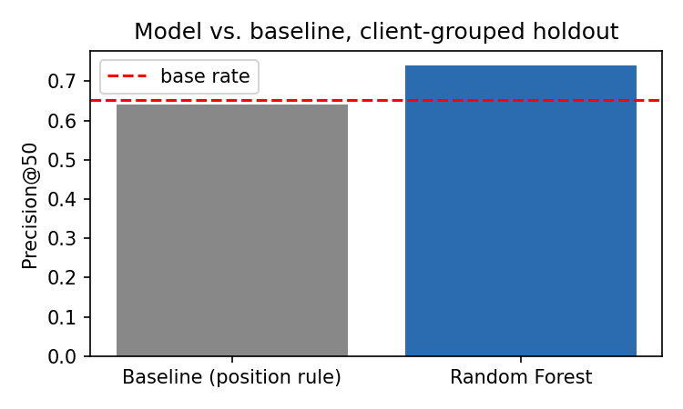
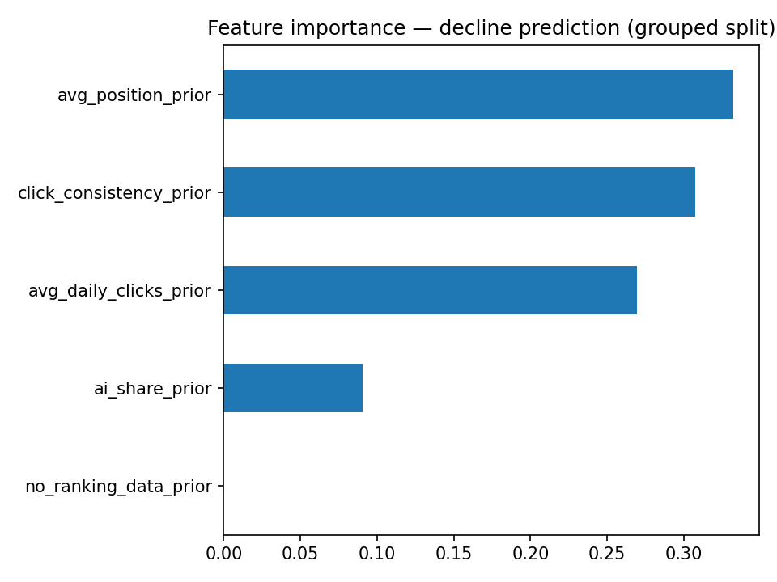

Safa Gul — FlyRank ML Internship Capstone, 2026
Headline result: On an honest, client-held-out test, the model ranks priority review pages with 1.17× the precision of random selection — modest but real, and measured the hard way after two easier-looking numbers (0.86 and 1.00) turned out to be evaluation artifacts.
Which content is worth reviewing first, before it declines? Using 90 days of prior search performance for ~7,000 content items that already clear a minimal traffic floor, I built a Random Forest classifier and compared it against a transparent single-signal baseline (weak search position). On a client-held-out test split — the only honest way to measure this — the model reached Precision@50 of 0.76 against a 0.65 base rate, versus 0.64 for the baseline. The larger finding was methodological: the same baseline scored 0.86 when measured on familiar clients, and the same model scored a perfect 1.00 on a naive random split — both artifacts of evaluating on data the method had already seen. This is decision-support evidence for a content team's weekly review queue, not a causal or automated claim.
Content that ranks well in search quietly decays over time — rankings slip, clicks drop, and most teams notice too late. Out of thousands of pages, the valuable decision is which one to review first. This work builds a ranked, explainable early-warning signal for that decision, using only information available before the fact — never information from the outcome window itself.
Source: the FlyRank internship warehouse (Hugging Face, pseudonymized),
fact_content_daily_performance — daily GSC/GA4 search performance across 104
clients over ~17 months. Each content item's "prior" window is the 90 days before a decision
date; its "future" outcome is the following 30 days.
Of 363,626 content items, only 6,920 (1.9%) average at least 1 click/day over the prior
window — the population this model addresses. Below that floor, decline isn't a well-defined
question. ga4_coverage_prior was tested and excluded after being shown to reflect
which client set up tracking, not page-level behavior. No client names, domains, URLs, or raw
queries appear anywhere in this work.
Label: average daily clicks in the future window dropping below 75% of the prior window's average, built strictly from the future window relative to the prior — verified leak-free by training once with a deliberately smuggled future-window feature (AUC jumped from 0.63 to 0.997, confirming the test itself was sound) and once without.
Features (5, all prior-window only): average daily clicks, average search position, click consistency (share of days with any clicks), AI-referral session share, and a flag for pages with no ranking data at all.
Baseline: a single-signal rule — flag pages with search position worse than the eligible population's median — chosen because it was the only one of three candidate signals (position, click consistency, GA4 coverage) to survive a formal signal audit.
Model: Random Forest, to combine multiple prior-window signals without hand-specifying their interaction.
Validation: split by client, not by row — an entire client's pages land on only one side of the split, so test performance measures generalization to new clients rather than memorization of familiar ones.

Precision@50 on a client-grouped holdout split. Base rate: 0.65.
| Method | Precision@50 | Lift over base rate |
|---|---|---|
| Baseline (position rule) | 0.64 | 0.98× |
| Random Forest | 0.76 | 1.17× |

Search position and click consistency drive most of the model's decisions.
The model produces a priority queue, not an automated action. Every flag requires human review before any change is made — no page should be unpublished, redirected, or otherwise modified from this score alone.
Model: RandomForestClassifier(n_estimators=200, random_state=42, class_weight='balanced'). Split: GroupShuffleSplit, 70/30 by client_hash_id, single split (n_splits=1), same seed. Dependencies: duckdb, huggingface_hub, scikit-learn, pandas — see requirements.txt. Full notebooks, in build order, with all code and markdown reasoning: work/notebooks/ in the project repository. Note: features are queried live from the warehouse each run, so results vary slightly run to run (observed range: 0.74–0.80 Precision@50) even with a fixed seed — the model is deterministic, its input snapshot isn't.
Built on the FlyRank ML Internship dataset — flyrank.ai.